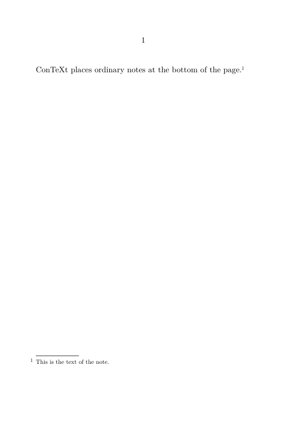

Notes in ConTeXt · General overview · Footnotes · Endnotes · Margin notes · Critical apparatuses · TEI critical editions
🚧 Under construction — This page and its subpages are currently being revised. Contributions are welcome: feel free to edit and improve them. .
Contents
- 1 1. What is a note?
- 2 2. Notes in ConTeXt
- 3 3. Choose the documentation that matches your need
- 4 4. Tutorial
- 5 5. How-to guides
- 6 6. Reference
- 7 7. Explanation
- 8 8. Glossary
- 9 9. Footnotes, endnotes, and margin notes
- 10 10. Notes, line notes, and critical apparatuses
- 11 11. Related pages
1. What is a note?
A note is information associated with a particular point, passage, object, or division of a document, but placed outside the main flow of the text.
Notes allow an author, editor, translator, or publisher to add material without inserting every reference, qualification, or explanation into the running argument.
A note may provide, for example:
- a bibliographical reference or the source of a quotation;
- a clarification, definition, or additional argument;
- a translation or an explanation of a translation choice;
- an editorial intervention or textual variant;
- information attached to a table, figure, caption, or framed example.
The familiar footnote is only one possible form of annotation. Depending on the structure of the publication, notes may be placed at the bottom of the page, in the margin, beside numbered lines, or at the end of a section, chapter, part, or document.
A note is both information and structure
A note has an editorial function, belongs to a note series, has a mark or identifier, follows a numbering system, and is placed according to the design of the document.
2. Notes in ConTeXt
ConTeXt provides the predefined footnote series and a general mechanism for defining, numbering, formatting, placing, and selecting notes.
2.1. A first ordinary footnote
For an ordinary footnote, the basic command is:
-
\setuppapersize[A6] \starttext ConTeXt places ordinary notes at the bottom of the page.\footnote {This is the text of the note.} \stoptext
-

The command \footnote creates a mark in the running text, registers the corresponding note entry, advances the counter, and places the entry in the footnote area.
2.2. Defining additional note series
More complex publications may require several note series corresponding to different editorial functions.
For example:
\definenote [EdNote] [footnote] \definenote [TradNote] [footnote]
These definitions create semantically named commands:
\EdNote{An observation supplied by the editor.}
\TradNote{An explanation of the translator's choice.}
The two series initially inherit their behaviour from footnote, but may later be numbered, formatted, placed, or selected independently.
Name note series according to editorial function
Names such as EdNote, TradNote, SourceNote, or VariantNote remain meaningful even if their visual presentation changes later.
Names such as RedNote or SmallNote describe a temporary appearance rather than the role of the note.
2.3. Editorial function and physical placement
A translator's note and a textual variant may both appear at the bottom of the page, but they do not perform the same editorial function.
Conversely, an editorial note remains an editorial note whether it is printed:
- at the bottom of the page;
- in the margin;
- after a chapter;
- in a separately collected apparatus.
It is therefore useful to distinguish between:
- the editorial function of a note;
- the series to which it belongs;
- the place where it is printed;
- the form in which its mark and entry appear.
Footnotes are only the beginning
The predefined footnote series is the most familiar example of a more general note mechanism. ConTeXt can also manage postponed notes, local notes, marginal notes, several independent note series, and compact scholarly apparatuses.
3. Choose the documentation that matches your need
The documentation is organized into five complementary parts.
| Documentation | Purpose | Typical question |
|---|---|---|
| Tutorial | Learn the basic workflow by creating and formatting a small document step by step. | “How do I create and format my first footnotes?” |
| How-to guides | Solve a specific publishing problem with a focused procedure. | “How do I place all notes at the end of each chapter?” |
| Reference | Consult commands, syntax, parameters, numbering systems, and placement commands. | “What is the syntax of \definenote?”
|
| Explanation | Understand the conceptual model behind marks, entries, series, counters, notation, and placement. | “What is the difference between a note series and a notation?” |
| Glossary | Check the precise meaning of the terminology used throughout the documentation. | “What is the difference between a note mark and a note entry?” |
New to notes in ConTeXt?
Begin with the Tutorial. It introduces ordinary footnotes before moving to references, numbering, formatting, and explicit placement.
4. Tutorial
4.1. Creating and formatting your first footnotes
The tutorial introduces notes progressively through a small working document.
It shows how to:
- create an ordinary footnote;
- add several notes;
- assign a stable reference;
- refer to the same note again;
- control basic numbering;
- change the body font used for note entries;
- place a group of notes explicitly.
5. How-to guides
The how-to guides provide focused procedures for specific publishing tasks. They assume that the reader already understands the basic use of \footnote.
How to use this section
Choose the task closest to the result you need. Each guide concentrates on one practical problem and links back to the tutorial, reference, explanation, and glossary.
The order below progresses from ordinary note operations to placement, editorial organization, and specialized technical cases.
5.1. Basic note operations
5.1.1. Referring to a footnote more than once
Use a stable internal reference to print the same note mark at several points in the text without creating duplicate note entries.
Topics include:
- \footnote [reference]{... };
- \note [reference] ;
- repeated note marks;
- stable internal references;
- the difference between repeating a mark and creating another entry.
5.1.2. Separating a note mark from its text
Create the note mark and corresponding note entry at different points in the source.
Topics include:
- \note ;
- \setnotetext ;
- assigning a stable reference;
- several references to one note entry;
- controlled nested-note situations.
5.1.3. Formatting footnotes
Control the visual presentation of note marks, note entries, and the footnote block.
Topics include:
- the body font of note entries;
- interline spacing;
- alignment and hyphenation;
- the position and style of note numbers;
- the rule above the footnote block;
- notes in columns;
- notes in paragraph form.
5.2. Placement, postponement, and local scope
5.2.1. Placing footnotes at the end of a section or chapter
Postpone entries in the ordinary footnote series and place them at a chosen structural boundary.
Topics include:
-
location=text; - \placefootnotes ;
- placement after a section or chapter;
- repeated placement in a structured document;
- the distinction between postponed footnotes and endnotes.
5.2.2. Using local notes in tables, floats, and boxes
Keep note entries attached to the table, figure, caption, framed passage, or other object to which they belong.
Topics include:
- local note scopes;
- notes in tables and table cells;
- notes attached to figures and captions;
- notes in legends;
- notes inside or beneath framed texts;
- placing local entries close to the annotated object.
5.2.3. Placing numbered notes in the margin
Create a numbered note series whose entries are placed in a margin rather than at the bottom of the page.
Topics include:
- defining a dedicated note series;
- placing entries in the inner or outer margin;
- configuring note marks and entries;
- keeping marks and entries synchronized;
- distinguishing marginal notes from ordinary footnotes.
5.3. Editorial organization
5.3.1. Defining and managing multiple note series
Define independent note series corresponding to distinct editorial functions.
Topics include:
- \definenote ;
- semantic note commands;
- independent counters;
- different numbering systems;
- independent placement and formatting;
-
commands such as
\EdNote,\TradNote, and\SourceNote.
5.3.2. Producing annotated and unannotated versions
Use the same source to produce outputs containing different levels or categories of annotation.
Topics include:
- temporarily disabling notes;
- selecting individual note series;
- conditional inclusion of annotation;
- annotated editions;
- reading editions;
- maintaining one source for several publication versions.
5.4. Special technical cases
5.4.1. Creating interactive footnotes
Configure clickable links between note marks and note entries in interactive PDF documents.
Topics include:
- enabling interaction;
- linking note marks to note entries;
- returning from an entry to the running text;
- interaction settings for note series;
- checking links in different PDF viewers.
5.4.2. Including verbatim material in footnotes
Insert short commands, code fragments, or spacing-sensitive material into note entries.
Topics include:
- inline verbatim material;
- special characters;
- expansion and parsing constraints;
- short code fragments;
- alternatives for longer examples.
5.4.3. Typesetting notes in bidirectional documents
Control note direction, font coverage, script shaping, alignment, and the position of the rule above the note block in documents combining left-to-right and right-to-left writing.
Topics include:
- left-to-right and right-to-left note series;
- script-aware font selection;
- direction of note marks and entries;
- note-entry alignment;
- shaping of Arabic and Hebrew scripts;
- placement of the rule above the note block.
Advanced guide still to be prepared
A future guide, Marking notes continued across pages, will explain how to add continuation marks when a long note extends over two or more pages.
It will belong to the “Special technical cases” group.
6. Reference
The reference page provides concise technical descriptions of the commands and settings used by the ConTeXt note mechanism.
It covers:
- creating ordinary and custom notes;
- recalling note marks;
- registering note entries separately;
- configuring note series with \setupnote ;
- configuring notation with \setupnotation ;
- placing postponed and local notes;
- numbering, reset levels, interaction, and directionality.
Consult exact syntax
7. Explanation
The explanation page examines the concepts underlying the practical commands.
It clarifies:
- the relation between note mark and note entry;
- the distinction between a note series and its notation;
- the difference between note creation and note placement;
- postponed notes, endnotes, local notes, and migrated notes;
- stable references and printed numbers;
- interaction, directionality, and parsing.
Understand the model
8. Glossary
The glossary defines the vocabulary used throughout the documentation.
It includes terms such as:
- note mark;
- note entry;
- note series;
- notation;
- counter;
- placement;
- postponed note;
- local note;
- migrated note;
- interaction;
- apparatus.
Check terminology
9. Footnotes, endnotes, and margin notes
Footnotes, endnotes, and margin notes belong to the same general family of annotation, but differ in placement and sometimes in editorial function.
| Form | Typical placement | Main page |
|---|---|---|
| Footnote | Bottom of the page | Footnotes |
| Endnote | End of a section, chapter, part, or document | Endnotes |
| Margin note | Inner or outer margin | Margin notes |
The mechanism is shared; the placement differs
The same general note mechanism supports several forms of placement. Depending on the intended result, a note series may be configured, postponed, collected, or defined specifically for marginal placement.
10. Notes, line notes, and critical apparatuses
Ordinary notes, line notes, and critical apparatuses are related forms of annotation, but they do not serve exactly the same purpose.
A footnote usually comments on a point or passage in the running text. A line note is anchored to a numbered line. A critical apparatus records structured textual evidence such as lemmas, variant readings, witnesses, omissions, additions, and conjectures.
A critical apparatus may therefore need to identify:
- a numbered line;
- a lemma;
- one or more variant readings;
- the witnesses supporting each reading;
- several independent apparatus levels.
Do not force every scholarly annotation into an ordinary footnote
ConTeXt provides line-note mechanisms and independently configured note series for editions requiring a closer relationship between annotations and the structure of the edited text.
For fuller introductions, see:
- Building a critical apparatus with ConTeXt ;
- Glossary of critical edition terms ;
- Building critical editions from TEI XML ;
- Glossary of terms used in the TEI XML critical edition guides .
11. Related pages
Notes in ConTeXt · General overview · Footnotes · Endnotes · Margin notes · Critical apparatuses · TEI critical editions